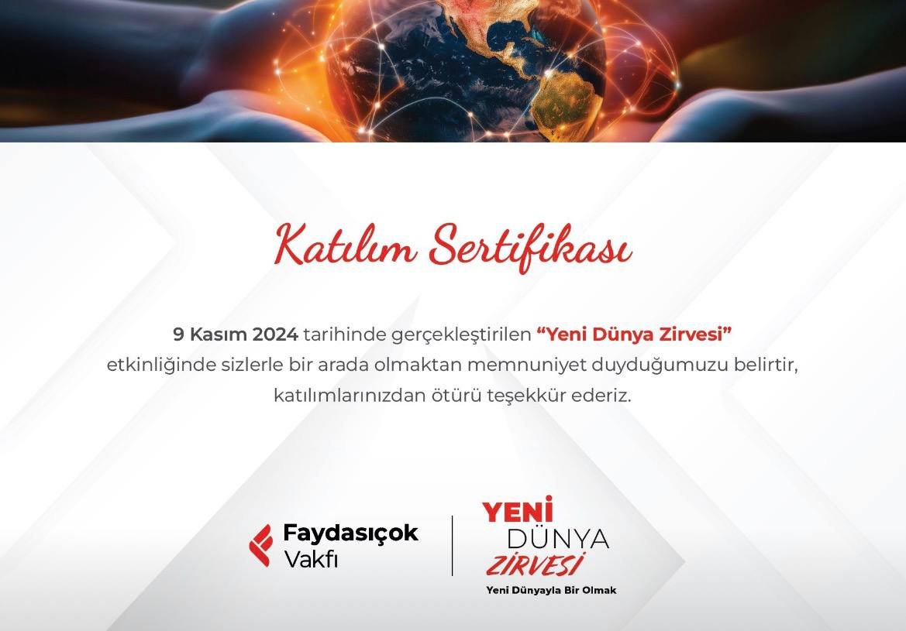
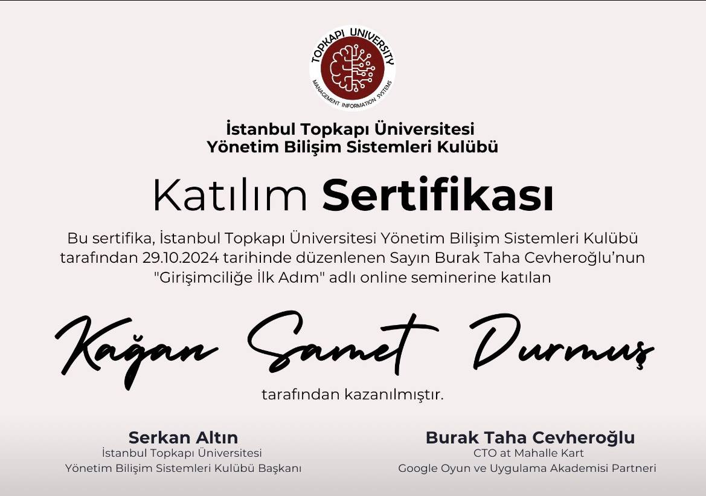
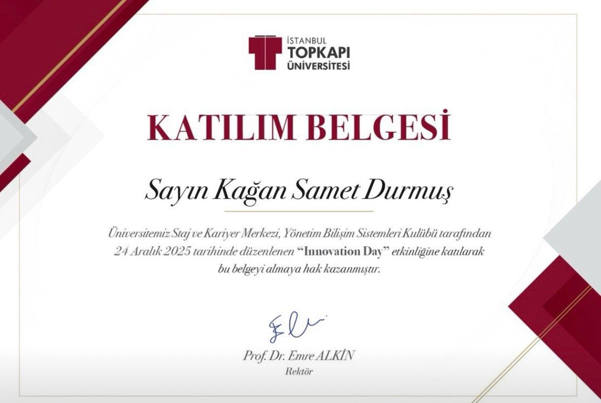

1CI Career Summit
Подтверждение участия в 1CI Career Summit и карьерного достижения, усиливающее профессиональную видимость.
Пост LinkedIn о 1CI Career SummitЭта страница работает как proof-слой, а не просто как галерея. Она поддерживает основные проектные и skill-кластеры внешними видимыми сигналами.
Подтверждение участия в 1CI Career Summit и карьерного достижения, усиливающее профессиональную видимость.
Пост LinkedIn о 1CI Career Summit
Подтверждение участия в проекте и событии с социальным воздействием.
Пост LinkedIn о социальном проекте
Сертификат, который отражает результаты обучения на стыке предпринимательства и технологий.
Пост LinkedIn о предпринимательском обучении
Сигнал участия в Innovation Day, отражающий прикладное обучение и событийную видимость.
Пост LinkedIn об Innovation Day
Сигнал видимости, отражающий публичный охват профиля и профессиональную сеть в LinkedIn.
Профиль LinkedIn как сигнал видимостиЭти сигналы не стоит воспринимать как отдельную галерею достижений. Они работают как внешние подтверждения для тезисов на страницах проектов и навыков, поэтому эта страница позиционируется как слой доверия, связанный с кейсами и ключевыми кластерными URL.
Страница намеренно использует проверяемые публичные ссылки и визуальные подтверждения вместо непроверяемых заявлений. Ее задача — поддерживать E-E-A-T, связывая внешнюю видимость, участие в событиях и проектную работу в один маршрут доверия. Каждый блок ограничен доказательствами, которые можно связать с публичным профилем, событием или сертификатом; страница работает как проверяемый, структурированный и контекстный справочник доверия для тезисов портфолио.
Эти сигналы полезнее всего читать вместе с FinTechTerms, AskViraBot и общими кластерами навыков.